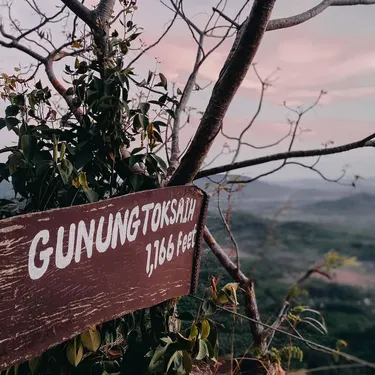
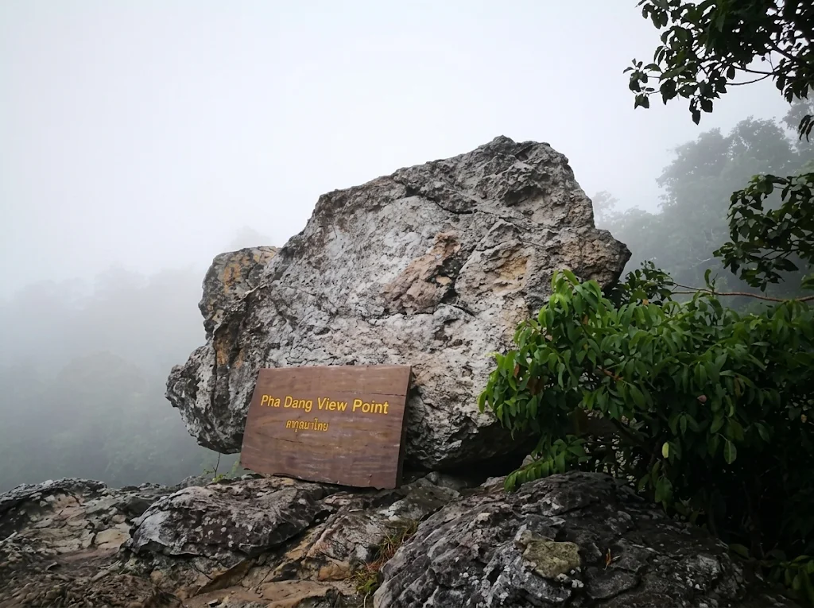

Gunung Silipat
Gunung Toksaih

Gunung Toksaih

| สถานที่ | จุดชมวิวทะเลหมอกและจุดเดินป่าธรรมชาติ | |
| ที่ตั้ง | 26/13 ม.1 ตำบล อัยเยอร์เวง อำเภอเบตง ยะลา 95110 | |
| โทรศัพท์ | 098 689 9531 | |
| Gunung Silipat Thailand | ||
| ระยะทาง | 800 เมตร ถึงประมาณ 2 กิโลเมตร ใช้เวลา 25 นาที ถึง 1.5 ชั่วโมง |
|
| ค่าบริการ | ค่าเช่าเต้นท์หลายราคา ค่าบริการเช่าพื้นที่คนละ 150 | |
| สวัสดิการ | ห้องน้ำ อาหารเช้า | |
| ข้อควรรู้ | ต้องโทรจองทริปกับไกด์ในพื้นที่ ไม่อนุญาติให้เดินขึ้นเอง |
| สถานที่ | ชมทะเลหมอกและพระอาทิตย์ขึ้นยามเช้า มองเห็นวิวหมู่บ้านและแสงไฟยามค่ำคืน | |
| ที่ตั้ง | หมู่ 5 บ้านตาโละ ตำบลลิดล อำเภอเมืองยะลา จังหวัดยะลา | |
| โทรศัพท์ | 098 070 3374 | |
| Gunung Silipat Thailand | ||
| ระยะทาง | ประมาณ 1.5 กิโลเมตร ใช้เวลาเดินราว 1-2 ชั่วโมง | |
| ค่าบริการ | ค่าไกด์ 50 บาท, ค่าเช่าเต็นท์เล็ก/ใหญ่ : 100/150 บาท และค่ามัดจำขยะ 50 บาท | |
| สวัสดิการ | ตรงจุดรวมตัวมีที่จอดรถและร้านค้าในชุมชน มีอาหารเย็นถ้ามาทัน | |
| ข้อควรรู้ | ต้องโทรจองทริปกับไกด์ในพื้นที่ ไม่อนุญาติให้เดินขึ้นเอง เตรียม น้ำดื่ม อาหาร และไฟฉายขึ้นไปเอง |
| สถานที่ | ก้อนหินที่สามารถโยกได้ริมหน้าผา และมองเห็นวิวทะเลหมอกสลับกับขุนเขา | |
| ที่ตั้ง | หมู่บ้านจุฬาภรณ์พัฒนา 9 ตำบลแม่หวาด อำเภอธารโต จังหวัดยะลา ใกล้แนวป่าฮาลา-บาลา | |
| โทรศัพท์ | 097 117 5567 | |
| ฮาลาบาลา ชุมชนท่องเที่ยวจุฬาภรณ์พัฒนา๙ จ.ยะลา | ||
| ระยะทาง | ประมาณ 500 เมตร และทางค่อนข้างชัน | |
| ค่าบริการ | ค่าเช่าที่พักใกล้เคียง หรือค่าทัวร์ | |
| ข้อควรรู้ | เป็นเส้นทางที่ลาดชันค่อนข้างมาก แนะนำการเที่ยวควบคู่ในชุมชน |